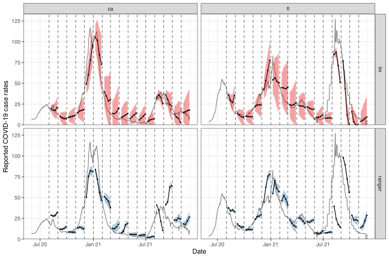
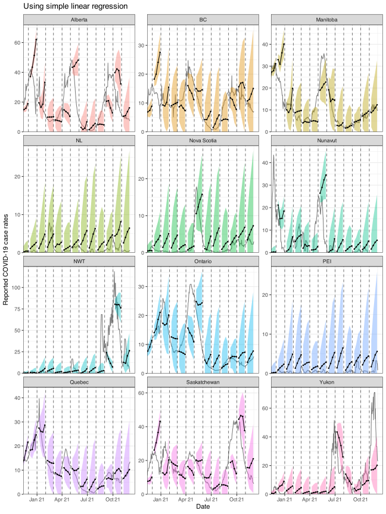
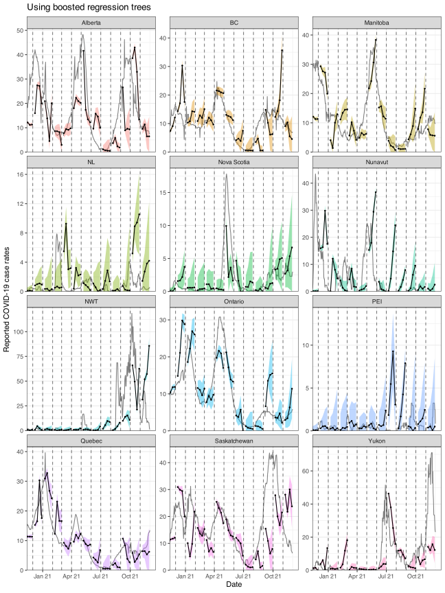

us_raw_history_dfs <-
readRDS(system.file("extdata", "all_states_covidcast_signals.rds",
package = "epipredict", mustWork = TRUE
))
us_cli_archive <- us_raw_history_dfs[[1]] %>%
select(geo_value, time_value, version = issue, percent_cli = value) %>%
as_epi_archive(compactify = TRUE)
us_cases_archive <- us_raw_history_dfs[[2]] %>%
select(geo_value, time_value, version = issue, case_rate = value) %>%
as_epi_archive(compactify = TRUE)
us_archive <- epix_merge(
us_cli_archive, us_cases_archive,
sync = "locf", compactify = TRUE
)14 Pseudo-prospective forecast inspection
A key function from the epiprocess package is epi_slide(), which allows the user to apply a function or formula-based computation over variables in an epi_df over a running window of n time steps (see the following epiprocess vignette to go over the basics of the function: “Slide a computation over signal values”). The equivalent sliding method for an epi_archive object can be called by using the wrapper function epix_slide() (refer to the following vignette for the basics of the function: “Work with archive objects and data revisions”). The key difference from epi_slide() is that it performs version-aware computations. That is, the function only uses data that would have been available as of time t for that reference time.
In this vignette, we use epi_slide() and epix_slide() for backtesting our arx_forecaster on historical COVID-19 case data from the US and from Canada. More precisely, we first demonstrate using epi_slide() to slide ARX forecasters over an epi_df object and compare the results obtained from using different forecasting engines. We then compare these simple retrospective forecasts to more proper “pseudoprospective” forecasts generated using snapshots of the data that was available in real time, using epix_slide().
14.1 Comparing different forecasting engines
14.1.1 Example using CLI and case data from US states
First, we download the version history (i.e. archive) of the percentage of doctor’s visits with CLI (COVID-like illness) computed from medical insurance claims and the number of new confirmed COVID-19 cases per 100,000 population (daily) for all 50 states from the COVIDcast API. We process as before, with the modification that we use sync = "locf" in epix_merge() so that the last version of each observation can be carried forward to extrapolate unavailable versions for the less up-to-date input archive.
After obtaining the latest snapshot of the data, we produce forecasts on that data using the default engine of simple linear regression and compare to a random forest.
Note that all of the warnings about the forecast date being less than the most recent update date of the data have been suppressed to avoid cluttering the output.
# Latest snapshot of data, and forecast dates
us_latest <- epix_as_of(us_archive, max_version = max(us_archive$versions_end))
fc_time_values <- seq(
from = as.Date("2020-08-01"),
to = as.Date("2021-11-01"),
by = "1 month"
)
aheads <- c(7, 14, 21, 28)
k_week_ahead <- function(epi_df, outcome, predictors, ahead = 7, engine) {
epi_slide(epi_df, ~ arx_forecaster(
.x, outcome, predictors, engine,
args_list = arx_args_list(ahead = ahead)
)$predictions %>%
select(-geo_value),
before = 120L - 1L,
ref_time_values = fc_time_values,
new_col_name = "fc"
) %>%
select(geo_value, time_value, starts_with("fc")) %>%
mutate(engine_type = engine$engine)
}
# Generate the forecasts and bind them together
fc <- bind_rows(
map(aheads, ~ k_week_ahead(
us_latest, "case_rate", c("case_rate", "percent_cli"), .x,
engine = linear_reg()
)) %>%
list_rbind(),
map(aheads, ~ k_week_ahead(
us_latest, "case_rate", c("case_rate", "percent_cli"), .x,
engine = rand_forest(mode = "regression")
)) %>%
list_rbind()
) %>%
pivot_quantiles(contains("_distn"))Here, arx_forecaster() does all the heavy lifting. It creates leads of the target (respecting time stamps and locations) along with lags of the features (here, the response and doctors visits), estimates a forecasting model using the specified engine, creates predictions, and non-parametric confidence bands.
To see how the predictions compare, we plot them on top of the latest case rates. Note that even though we’ve fitted the model on all states, we’ll just display the results for two states, California (CA) and Florida (FL), to get a sense of the model performance while keeping the graphic simple.
Code
fc_cafl <- fc %>% filter(geo_value %in% c("ca", "fl"))
latest_cafl <- us_latest %>% filter(geo_value %in% c("ca", "fl"))
ggplot(fc_cafl, aes(fc_target_date, group = time_value, fill = engine_type)) +
geom_line(
data = latest_cafl, aes(x = time_value, y = case_rate),
inherit.aes = FALSE, color = "gray50"
) +
geom_ribbon(aes(ymin = `0.05`, ymax = `0.95`), alpha = 0.4) +
geom_line(aes(y = fc_.pred)) +
geom_point(aes(y = fc_.pred), size = 0.5) +
geom_vline(aes(xintercept = time_value), linetype = 2, alpha = 0.5) +
facet_grid(engine_type ~ geo_value, scales = "free") +
scale_x_date(minor_breaks = "month", date_labels = "%b %y") +
scale_fill_brewer(palette = "Set1") +
scale_y_continuous(expand = expansion(c(0, 0.05))) +
labs(x = "Date", y = "Reported COVID-19 case rates") +
theme(legend.position = "none")
For the two states of interest, simple linear regression clearly performs better than random forest in terms of accuracy of the predictions and does not result in such in overconfident predictions (overly narrow confidence bands). Though, in general, neither approach produces amazingly accurate forecasts. This could be because the behaviour is rather different across states and the effects of other notable factors such as age and public health measures may be important to account for in such forecasting. Including such factors as well as making enhancements such as correcting for outliers are some improvements one could make to this simple model.1
14.1.2 Example using case data from Canada
By leveraging the flexibility of epiprocess, we can apply the same techniques to data from other sources. Since some collaborators are in British Columbia, Canada, we’ll do essentially the same thing for Canada as we did above.
The COVID-19 Canada Open Data Working Group collects daily time series data on COVID-19 cases, deaths, recoveries, testing and vaccinations at the health region and province levels. Data are collected from publicly available sources such as government datasets and news releases. Unfortunately, there is no simple versioned source, so we have created our own from the Github commit history.
First, we load versioned case rates at the provincial level. After converting these to 7-day averages (due to highly variable provincial reporting mismatches), we then convert the data to an epi_archive object, and extract the latest version from it. Finally, we run the same forcasting exercise as for the American data, but here we compare the forecasts produced from using simple linear regression with those from using boosted regression trees.
# source("drafts/canada-case-rates.R)
can <- readRDS(system.file(
"extdata", "can_prov_cases.rds",
package = "epipredict", mustWork = TRUE
))
can <- can %>%
group_by(version, geo_value) %>%
arrange(time_value) %>%
mutate(cr_7dav = RcppRoll::roll_meanr(case_rate, n = 7L)) %>%
as_epi_archive(compactify = TRUE)
can_latest <- epix_as_of(can, max_version = max(can$DT$version))
# Generate the forecasts, and bind them together
can_fc <- bind_rows(
map(aheads, ~ k_week_ahead(
can_latest, "cr_7dav", "cr_7dav", .x, linear_reg()
)) %>%
list_rbind(),
map(aheads, ~ k_week_ahead(
can_latest, "cr_7dav", "cr_7dav", .x,
boost_tree(mode = "regression", trees = 20)
)) %>%
list_rbind()
) %>%
pivot_quantiles(contains("_distn"))The first figure shows the results for all of the provinces using linear regression.
Code
ggplot(
can_fc %>% filter(engine_type == "lm"),
aes(x = fc_target_date, group = time_value)
) +
coord_cartesian(xlim = lubridate::ymd(c("2020-12-01", NA))) +
geom_line(
data = can_latest, aes(x = time_value, y = cr_7dav),
inherit.aes = FALSE, color = "gray50"
) +
geom_ribbon(aes(ymin = `0.05`, ymax = `0.95`, fill = geo_value),
alpha = 0.4
) +
geom_line(aes(y = fc_.pred)) +
geom_point(aes(y = fc_.pred), size = 0.5) +
geom_vline(aes(xintercept = time_value), linetype = 2, alpha = 0.5) +
facet_wrap(~geo_value, scales = "free_y", ncol = 3) +
scale_x_date(minor_breaks = "month", date_labels = "%b %y") +
scale_y_continuous(expand = expansion(c(0, 0.05))) +
labs(
title = "Using simple linear regression", x = "Date",
y = "Reported COVID-19 case rates"
) +
theme(legend.position = "none")
Compare those forecasts with a related set using Gradient Boosting.
Code
ggplot(
can_fc %>% filter(engine_type == "xgboost"),
aes(x = fc_target_date, group = time_value)
) +
coord_cartesian(xlim = lubridate::ymd(c("2020-12-01", NA))) +
geom_line(
data = can_latest, aes(x = time_value, y = cr_7dav),
inherit.aes = FALSE, color = "gray50"
) +
geom_ribbon(aes(ymin = `0.05`, ymax = `0.95`, fill = geo_value),
alpha = 0.4
) +
geom_line(aes(y = fc_.pred)) +
geom_point(aes(y = fc_.pred), size = 0.5) +
geom_vline(aes(xintercept = time_value), linetype = 2, alpha = 0.5) +
facet_wrap(~geo_value, scales = "free_y", ncol = 3) +
scale_x_date(minor_breaks = "month", date_labels = "%b %y") +
scale_y_continuous(expand = expansion(c(0, 0.05))) +
labs(
title = "Using boosted regression trees", x = "Date",
y = "Reported COVID-19 case rates"
) +
theme(legend.position = "none")
Both approaches tend to produce quite volatile forecasts (point predictions) and/or are overly confident (very narrow bands), particularly when boosted regression trees are used. But as this is meant to be a simple demonstration of sliding with different engines in arx_forecaster, we may devote another vignette to work on improving the predictive modelling using the suite of tools available in epipredict.
14.2 Pseudoprospective vs. unfaithful retrospective forecasting
14.2.1 Example using case data from US states
We will now run pseudoprospective forecasts based on properly-versioned data (that would have been available in real-time) to forecast future COVID-19 case rates from current and past COVID-19 case rates for all states. That is, we can make forecasts on the archive, us_archive, and compare those to forecasts on (time windows of) the latest data, us_latest, using the same general set-up as above. For pseudoprospective forecasting, note that us_archive is fed into epix_slide(), while for simpler (unfaithful) retrospective forecasting, us_latest is fed into epi_slide(). #%% update to include percent_cli after that issue is fixed?
k_week_versioning <- function(ahead, version = c("faithful", "unfaithful")) {
version <- match.arg(version)
if (version == "faithful") {
epix_slide(
us_archive,
~ arx_forecaster(
.x, "case_rate", c("case_rate", "percent_cli"),
args_list = arx_args_list(ahead = ahead)
)$predictions,
before = 120 - 1,
ref_time_values = fc_time_values,
new_col_name = "fc"
) %>%
mutate(version = "version faithful") %>%
rename(geo_value = "fc_geo_value")
} else {
k_week_ahead(
us_latest, "case_rate", c("case_rate", "percent_cli"),
ahead, linear_reg()
) %>% mutate(version = "not version faithful")
}
}
# Generate the forecasts, and bind them together
fc <- bind_rows(
map(aheads, ~ k_week_versioning(.x, "faithful")) %>% list_rbind(),
map(aheads, ~ k_week_versioning(.x, "unfaithful")) %>% list_rbind()
) %>% pivot_quantiles(fc_.pred_distn)Now we can plot the results on top of the latest case rates. As before, we will only display and focus on the results for FL and CA for simplicity.
Code
fc_cafl <- fc %>% filter(geo_value %in% c("ca", "fl"))
latest_cafl <- us_latest %>% filter(geo_value %in% c("ca", "fl"))
ggplot(fc_cafl, aes(x = fc_target_date, group = time_value)) +
geom_line(
data = latest_cafl, aes(x = time_value, y = case_rate),
inherit.aes = FALSE, color = "gray50"
) +
geom_ribbon(aes(ymin = `0.05`, ymax = `0.95`, fill = version), alpha = 0.4) +
geom_line(aes(y = fc_.pred)) +
geom_point(aes(y = fc_.pred), size = 0.5) +
geom_vline(aes(xintercept = time_value), linetype = 2, alpha = 0.5) +
facet_grid(version ~ geo_value, scales = "free") +
scale_x_date(minor_breaks = "month", date_labels = "%b %y") +
scale_y_continuous(expand = expansion(c(0, 0.05))) +
labs(x = "Date", y = "Reported COVID-19 case rates") +
scale_fill_brewer(palette = "Set1") +
theme(legend.position = "none")Again, we observe that the results are not great for these two states, but that’s likely due to the simplicity of the model (ex. the omission of key factors such as age and public health measures) and the quality of the data (ex. we have not personally corrected for anomalies in the data).
We shall leave it to the reader to try the above version aware and unaware forecasting exercise on the Canadian case rate data. The above code for the American state data should be readily adaptable for this purpose.
Note that, despite the above caveats, simple models like this tend to out-perform many far more complicated models in the online Covid forecasting due to those models high variance predictions.↩︎